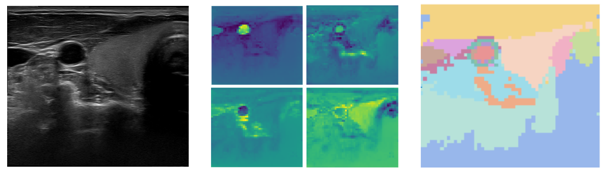
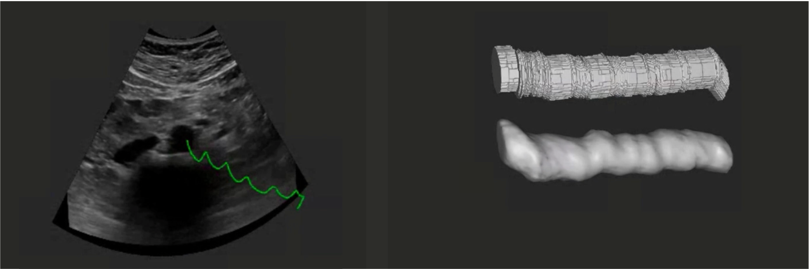

|
Yordanka (Dani) Velikova I am a PhD researcher in the Computer-Aided Medical Procedures Lab (CAMP) at the Technical University of Munich, under the supervision of Prof. Navab where I work on ultrasound image segmentation and robotic ultrasound. Email / Google Scholar / Twitter / Github |
{kind=link}
ResearchMy research is primarily focused on unsupervised medical image segmentation in particular for ultrasound imaging as well as image-based robotic ultrasound navigation. Beyond this, my interests branch into implicit neural representations, spectral embedding, shape completion, breathing compensation, and object tracking with transformers. |
|
|
Diffusion as Sound Propagation: Physics-inspired Model for Ultrasound Image Generation
Marina Domínguez*, Yordanka Velikova*, Nassir Navab, Mohammad Farid Azampour MICCAI 2024 (Oral Presentation) Arxiv / Code A physics-inspired diffusion model for ultrasound image generation, simulating sound wave propagation for realistic ultrasound image synthesis. |
|

|
Deep Spectral Methods for Unsupervised Ultrasound Image Interpretation
Oleksandra Tmenova*, Yordanka Velikova*, Mahdi Saleh, Nassir Navab MICCAI 2024 Arxiv / Code A novel deep spectral method for unsupervised interpretation of ultrasound images, advancing segmentation techniques through spectral clustering. |
 |
Shape completion in the dark: completing vertebrae morphology from 3D ultrasound
Miruna-Alexandra Gafencu, Yordanka Velikova, Mahdi Saleh, Tamas Ungi, Nassir Navab, Thomas Wendler, Mohammad Farid Azampour International Journal of Computer Assisted Radiology and Surgery (IJCARS), 2024 Arxiv / Code This project addresses the challenge of completing vertebrae morphology from 3D ultrasound imaging, using novel shape completion techniques even in low-visibility or incomplete datasets. |
|

|
Implicit Neural Representations for Breathing-compensated Volume Reconstruction in Robotic Ultrasound
Yordanka Velikova, Mohammad Farid Azampour, Walter Simson, Marco Esposito, Nassir Navab 2024 ICRA Arxiv / Code This project focuses on using implicit neural representations to reconstruct 3D volumes from robotic ultrasound while compensating for respiratory motion during scanning. |
|
|
LOTUS: Learning to Optimize Task-based US representations
Yordanka Velikova, Mohammad Farid Azampour, Walter Simson, Vanessa Gonzalez Duque, Nassir Navab MICCAI 2023 (Oral Presentation) project page / arXiv Optimizing Ulrasound Intermediate Representations guided by the segmentation task. Trained end-to-end with domain adaptation network to account for the domain gap between real and simulated. |
 |
CACTUSS: Common Anatomical CT-US Space for US examinations
Yordanka Velikova, Walter Simson, Mehrdad Salehi, Mohammad Farid Azampour, MD Philipp Paprottka, Nassir Navab MICCAI, 2022 (Oral Presentation) Arxiv / Code
Common anatomical space between CT and US is an Intermediate Representation (IR) which acts as a virtual third modality. It inherits properties from both CT and Ultrasound and preserves the patient-specific anatomical layout.
|
|
Template webpage from source code. |